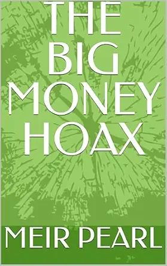

USAGov says Medicaid insures people with a low income and the Children's Health Insurance Program (CHIP) covers children. Its page was last updated August 11, 2026 when we checked on November 26, 2026.
Medicaid provides free or low-cost medical benefits to eligible adults with a low income, children, pregnant women, people 65 or over, and people with disabilities. Each state sets its own requirements. In general, eligibility depends on age, income, family size, and whether you are pregnant or have a disability.
You can apply anytime. Check with your state's Medicaid agency (you must live in that state), or create a Health Insurance Marketplace account and fill out an application. If someone in your household looks eligible, the Marketplace sends your information to your state agency, which contacts you about enrollment.
If your income is too high for Medicaid, your child may still qualify for CHIP, which covers medical and dental care for uninsured children and teens up to age 19. Rules differ by state and usually depend on income. You apply through your state's CHIP program or the Marketplace.
Your state may review your information each year and contact you if it needs more. Not every provider accepts Medicaid, so check with your state's Medicaid agency to find ones that do.
USAGov: How to apply for Medicaid and CHIP. Checked against the live page on November 26, 2026. This page is a summary in our own words. Check the official page for the latest details.
Featured books: links below. We may earn from sales.
Disclosure: this page includes paid promotion of the featured books, and the channel operator is affiliated with them. This page was written with AI assistance and checked against the cited official page. It is general education, not legal, tax, or financial advice. About | Privacy